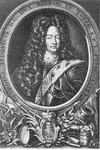
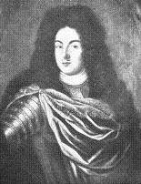
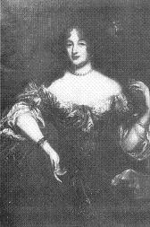
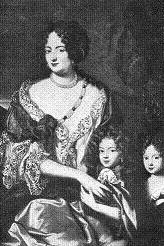
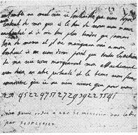
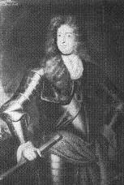

Came Ye Over from France?
Highland Quorum - 3rd September 1715
Tune - Mélodie (midi)"Came ye o'er frae France?"
from Hogg's "Jacobite Relics" part I, N°53, page 87
Sequenced by Christian Souchon
Sheet music- Partition
Other Version
Sequenced by Ronny Clarke

A sung version
|
1. Cam ye o'er frae France?
Cam ye down by Lunnon? Saw ye Geordie Whelps [1] And his bonny woman? Were ye at the place Ca'd the Kittle Housie? [2] Saw ye Geordie's grace Riding on a goosie? [3] 2. Geordie he's a man There is little doubt o't; He's done a' he can Wha can do without it? Down there came a blade [4] Linkin' like my lordie; He wad drive a trade At the loom o' Geordie. 3. Though the claith were bad, Blythly may we niffer; Gin we get a wab, [5] It makes little differ. We hae tint our plaid, Bannet, belt and swordie, [6] Ha's and mailins braid -- But we hae a Geordie! 4. Jocky's gane to France, [7] And Montgomery's lady; [8] There they'll learn to dance: [9] Madam, are ye ready? They'll be back belyve Belted, brisk and lordly; Brawly may they thrive To dance a jig wi' Geordie! 5. Hey for Sandy Don! [10] Hey for Cockolorum! [11] Hey for Bobbing John, [12] And his Highland Quorum! [13] Mony a sword and lance Swings at Highland hurdie; How they'll skip and dance O'er the bum o' Geordie! |
1. Viens-tu de Paris
En passant par Londres? As-tu vu Geordie Le Chiot et sa blonde? [1] As-tu vu l'endroit Dit "Maison salace"? [2] Où Geordie le Roi Chevauche une oie grasse? [3] 2. George est un luron - Oui, il l'est, sans doute - A bout d'effusions - Comme tous et toutes! -. Arrive un galant [4] Marchant sur ses traces; Où Geordie tissait Le voilà qui passe. 3. Bien mauvais tissu! A quoi bon débattre? Le morceau reçu Est semblable à l'autre. [5] On nous prend nos plaids, - Nos terres, nos loges -, Kilts, épées, bonnets -: [6] On nous laisse un George! 4. De Montgoméry [8] La Dame est en France Car elle et Jockie [7] Apprennent la danse. Bientôt de retour, Les deux, fiers et dignes, Avec George un jour Danseront la gigue! [9] 5. Salut, Sandy Don! [10] Et Cockalorum! [11] Salut, Bobbing John, [12] Et "Highland Quorum"! [13] Faites place à nos Sabres et nos lances! Geordie, sur ton dos Qu'ils ouvrent la danse! (Trad. Ch.Souchon (c) 2004) |

|
[1]
Geordie Whelps
: George the Guelph (= of Hanover), King George I.
The Guelphs and Ghibellines were factions supporting the Pope and the Holy Roman Emperor, respectively, in central and northern Italy, during a conflict which began in 1075 and, though it should have ended with the Concordat of Worms in 1122, persisted to the 15th century. In Dante's Inferno, prominent participants in the conflict are featured. The Guelphs drew their name from the House of Welf, the older branch of the House of Este whose earliest known members lived in Lombardy in the 9th century. The first member of this branch was Welf IV who inherited the property of the Elder House of Welf and became duke of Bavaria in 1070. One of his descendants, Henry the Lion was dispossessed of his duchies by the Emperor Frederick I and retained only his lands around Brunswick where he died in 1195. Henry’s grandson, Otto the Child became duke of a part of Saxony, henceforth known as ‘Duchy of Brunswick-Lüneburg” and died there in 1252. In 1692 the head of the cadet line was raised to the status of an imperial elector, the Elector of Hanover. It was his son Georg-Ludwig who inherited the British throne in 1714 as a result of the contoversial Act of Settlement 1701. Members of the Welf dynasty, known there as the House of Hanover, continued to rule Britain until the death of Queen Victoria in 1901. The name Welf is historically rendered in English as Guelf or Guelph, satirically modified by the Jacobites as “Whelp” or “Whelps”, in English and “Cuilean”, in Gaelic, both words meaning “pup, cub, young dog”, without, however, making of it an explicit insult, like the “dogs of Hanover” found in a modern text. [2] Kittle Housie : St James's Palace. [3] Goosie : the nickname of one of George's favourite, Countess von der Schulenburg . George's second mistress, Sophie von Kielmansegge, Countess of Darlington , may be referred to as the "bonny woman" in the fourth line of the poem. [4] Blade : gallant, here the Swede Königsmarck whom the Jacobites believed to be George Augustus's (later George II) real father ("he drove a trade at the loom of Geordie"). See below . [5] Claith and wab : Cloth and web= George I and George Augustus. [6] We have tint (=lost) our plaid, bonnet, belt and swordie : apparently alludes to a prohibition of the wearing of the Highland garb, whereas "Ha's and mailins braid" (halls and broad farmlands) hints at confiscations inflicted on supporters of the Pretender. We are deprived of our essentiel goods and riches but still have a king who is a fraud and his heir who is a bastard! The measures taken after Culloden were nothing novel. John Lorne Campbbell wrote in the preface to the 1982 edition of his "Highland Songs of the Forty-Five: "...the Rising of 1745 was the natural reaction of the Jacobite clans... against what has been since the coming of William of Orange in 1690 a calculated official genocidal campaign against the religion of many and the language of all Highlanders..." [7] Jocky : James, the Pretendent, also known as "the Chevalier de Saint Georges", in exile in France. [8] Montgomery's lady : James's mother, Mary Beatrice of Modena whose former chamberlain (and admirer), Sidney of Godolphin was known under the pseudonym "Mr. Montgomery". Though he was Lord Treasurer under Queen Anne, he had corresponded with Mary until his death in 1712. Hogg in his comments to this song suggests that it could refer to the wife of Lord James Montgomery who was engaged in a plot in 1695, but it does not make much sense. [9] Learn to dance : prepare to fight with George I. [10] Sandy Don : General Alexander Gordon, the "second-sighted Sandie" in Up an Waurn all (2nd stanza) . [11] Cockolorum : the Marquis of Huntly (who defected to the Hanoverians after Sheriffmuir, 13th November 1715. The song was composed before this date). [12] Bobbing John : The Earl of Mar, leader of the 1715 rising, who had the habit of frequently changing sides. The present Jacobite song not only admits but seems to claim this fickleness of his! [13] Highland Quorum : a council of 11 or 12 people at Aboyne on 3d September 1715 to plan the detail of the Rising. The song was compose after this date, but before Sheriffmuir. |
[1]
Geordie Whelps
: Georges "le Chiot" ou "le Guelfe" (= de Hanovre), le Roi Georges Ier.
Les Guelfes et les Gibelins étaient, respectivement, les partisans des papes et de l’empereur d’Allemagne en Italie du Nord et du centre, dans un conflit qui éclata en 1075, sembla réglé par le Concordat de Worms en 1122 mais ne s’acheva vraiment qu’au 15ème siècle. L’Enfer de Dante met en scène certains protagonistes de cette querelle. Les Guelfes tiraient leurs noms de la Dynastie des Welfen, la branche aînée de la Maison d’Este dont les premiers membres connus vivaient en Lombardie au 9ème siècle. A l’origine de cette branche on trouve Welf IV, l’héritier de la branche aînée de la Maison des Welfen, lequel devint Duc de Bavière en 1070. L’un de ses descendants, Henri le Lion fut dépossédé de ses duchés par l’Empereur Frédéric Ier et ne conserva que ses possessions autour de Brunswick où il mourut en 1195. L’un de ses descendants, Othon l’Enfant devint duc de la partie de la Saxe désormais connues comme le Duché de Brunswick-Lunebourg et y mourut en 1252. En 1692, le chef de la branche cadette fut élevé au rang d’Electeur impérial, l’Electeur de Hanovre, Ce fut son fils, Georges-Louis qui hérita du trône de Grande Bretagne, en 1714, en vertu du contestable Acte de dévolution de 1701. Les membres de la dynastie Guelfe, désignée ici sous le vocable de Maison de Hanovre continuèrent de régner sur la Grande-Bretagne jusqu’à la mort de la Reine Victoria, en 1901. Le nom historique de Welf est rendu en anglais sous les formes « Guelf » ou « Guelph » que les Jacobites transcrivent satiriquement en « Whelp » ou « Whelps » en anglais et « Cuilean » en gaélique, ces mots désignant un jeune animal, assez souvent un chiot. Ils ne vont cependant jamais jusqu’à l’injure explicite, telle que ces « chiens de Hanovre » que l’on trouve dans un poème moderne. [2] Kittle Housie : "La Maison (salace) des chatouilles", Palais Royal de St James's [3] Goosie : L'"oie grasse", surnom de l'une des favorites de Georges, la Comtesse von der Schulenburg. La seconde maitresse de George, Sophie von Kielmansegge, Comtesse de Darlington , pourrait être "la blonde" visée au quatrième vers du poème. [4] Blade : "gallant"; désigne ici le Suédois Königsmarck que les Jacobites estimaient être le vrai père du Prince de Galles, Georges Auguste, futur Georges II ("a tissé sur le métier de Georges"). Cf ci-après . [5] Tissu et morceau : Georges I et Georges Auguste. [6] On nous prend nos plaids, kilts, épées, bonnets : fait vraisemblablement allusion à une interdiction du port du costume des Highlands et "nos terres, nos bouges" ("halls and broad mailins"= châteaux et grandes propriétés) à des confiscations de biens appartenant à des partisans du Prétendant. On nous dépouille de l'essentiel, mais on nous donne un roi de contrebande dont l'héritier est un bâtard! Les mêmes mesures furent prises après Culloden. John Lorne Campbbell écrivait dans sa préface à l'édition 1982 de ses "Chants des Highlands de 1745:"... le soulèvement de 1745 fut la réponse naturelle des clans Jacobites ... à un génocide culturel perpétré par le pouvoir depuis l'avénement de Guillaume d'orange en 1690 à l'encontre de la religion d'un grand nombre et de la langue de tous les Highlanders..." [7] Jocky : Jacques, le Prétendant, également appelé le Chevalier de Saint-Georges, en exil en France [8] La Dame de Montgomery : la mère de Jacques, Marie Béatrice de Modène dont l'ancien chambellan, Sidney de Godolphin, qui était fort épris d'elle, était connu sous le pseudonyme de "Mr. Montgomery". Bien qu'il ait été Lord Trésorier sous le règne d'Anne, il avait entretenu une correspondance avec Marie jusqu'en 1712, date de la mort de ce personnage. Hogg, lorsqu'il commente ce chants, suggère qu'il s'agit de la femme de Lord James Montgomery, lequel fut impliqué dans un complot en 1695, mais cela semble très improbable. [9] Apprennent la danse : se préparent à entrer en lutte contre Georges I [10] Sandy Don : le Général Alexander Gordon, le "Sandy à la double-vue" de Up an Waurn all - 2ème couplet. [11] Cockolorum : Le Marquis de Huntly (qui passa du côté des Hanovriens après Sheriffmuir, 13 novembre 1715: le chant fut composé avant cette date). [12] Bobbing John : (l'Indécis) Le Comte de Mar, chef du soulèvement de 1715 qui avait l'habitude de changer de camp sans arrêt, une versatilité que ce chant Jacobite assume et revendique! [13] Highland Quorum : un conseil de 11 ou 12 personnes réuni à Aboyne le 3 septembre 1715 pour mettre au point les détails de l'insurrection. Le chant fut écrit entre cette date et Sheriffmuir. |
|
 The Jacobites requited the accusation of spuriousness brought against the Chevalier de Saint Georges, as deposed King James II ’s son was known in France, by asserting that King George II was born of adultery . This was one of the numberless pieces of gossip circulated about the mysterious disappearing of Count Philip Christopher Königsmarck on 1 July 1694 and the concomitant captivity confirmed by a condemnation to reclusion for life delivered by a Hanoverian court on 7 March 1695 against George’s mother, the Hanoverian Princess Sophie Dorothea of Celle (1666-1726) who was to spend most of her life in Ahlden Castle where she died, aged sixty, on 13 November 1726.If it is plausible that she intended to elope with her lover, it is highly improbable that George could have been the son of the young Count . Born on 14 March 1665 in the German city Stade where he was raised by his mother, the son of the Vice Governor of the Swedish duchies Bremen and Verden, Philip Christopher Königsmarck spent most his life in German surroundings. He may have met Sophie when he was 15 on the occasion of a visit his mother paid to the Court of Celle c. 1680. His mother is said to have asked the hand of the Princess for her oldest son Charles Johann, as mentioned by the German philosopher Leibniz. Though the young man's wanderings brought him to Celle from mid-December 1682 to mid-January 1683 when Sophie’s marriage to her cousin George Lewis (Georg Ludwig) took place and the newly married couple staid in Celle until 29 December 1682, so that Königsmarck may have then seen and spoken the Princess, he became her lover at the earliest in 1690 , as attested to by their abundant correspondence (over 600 Letters), Sophie’s first answer dating from 1692. Now, her son George Augustus, the future King George II, was born on 9 November 1683 . Her daughter Sophie Dorothea, born on 26 March 1687, who was to marry the future King of Prussia Frederick the Great, is also shielded from such surmises.  The extravagant young Count Königsmarck entered the service of the German Emperor in 1684 and took part in the campaigns against the Turks in Hungary until 1687. He commanded the Swedish cuirassier regiment Bielke and distinguished himself at the battle of Mohàcs. He returned home early in 1688 and was engaged in summer 1688 to Countess Rantzau, an engagement that was broken off very soon.After a short stay in Venice where he turned down an offer of enlisting, the young colonel was admitted in May 1689 in the Hanoverian army. First he was appointed as the commander of both Castle Guard companies, an elite body whom he led in the Middle Rhine campaign of 1689 against the French. In the winter 1689/1690 he went back to Hanover. He was then engaged in a new campaign against the French in Hainault from where he dates the first letter of his love correspondence with Princess Sophie Dorothea on 1 July 1690. In another letter dated on 3 September 1692 he declares that he has been madly in love with her (“amouros à la follie”) for the past two years. The judgment of divorce passed on 7 January 1695 against the unfortunate Princess does not mention her liaison which had yet been discovered by then. The threat of a scandalous elopement involving Sophie Dorothea and Königsmarck had become a serious concern to the Hanoverian court and both of them had been warned to break off the affair, but the lovers lied about their involvement, which they continued despite the warnings. The judgment accuses the Princess only to have attempted to leave her husband for whom she admitted to feel only aversion –all the more so as George Lewis preferred his mistress of many years, countess Melusine von der Schulenburg (1667-1743). The sentence was pronounced by a court of 8 jurists appointed by the two brothers rulers of the Guelfic principalities Calenberg (Hanover) and Celle (Lüneburg), her father George William and her uncle and father-in-law Ernest-Augustus, chiefly driven by politic motives.  There is some likelihood that Königsmarck was slain by order of a former mistress, Countess Clara Elisabeth von Platen , the wife of Prime-Minister Francis Ernest and mistress of the Duke Ernest Augustus. He had made her acquaintance late in 1689. The assassination perpetrated by four courtiers, all of them known by name in the chronics of the time, took place, according to the Danish ambassador Otto Mencken in Hanover, in Leineschloss Castle. During the night of 1 July 1694 Königsmarck was seen to enter the palace and make his way toward Sophie Dorothea's apartments. Very likely he never reached them and Princess Sophie Dorothea was not present when he was killed. The corpse was allegedly thrown, in a sack weighted with stones, in the adjoining river Leine.If not ordered by them, this murder was a convenient event to both Hanoverian rulers who concealed it almost a whole month. It is at least puzzling that the chief suspect, the Italian clergyman Don Nicolo Montalban, who was said to have struck the fatal blow, was presented with a sum of 10,000 talers from Ernest Augustus’ coffers. Sophie’s chambermaid and confidante Eleanor von dem Knesebeck was, as the most important witness of this painful affair, imprisoned as a precaution against divulgence, in the mountain castle Scharzfels from where she escaped in the night to 5 November 1697. As already mentioned the course followed by Sophie’s father and uncle served exclusively political aims. George William had been brought to agree to defer to his younger brother, Ernest Augustus, should electoral status in the German Empire be granted to the Guelfic House. It was thus that Ernest Augustus became the first Elector of Brunswick-Lüneburg in 1692, while George William remained Prince of Lüneburg - Celle until his death in 1705. At that time, Celle reverted to Lüneburg-Calenberg (Hanover) and the house of Brunswick-Lüneburg was united under the rule of Ernest Augustus' eldest son and George William's nephew and ex-son-in-law, George Lewis, the future King of Great Britain and Ireland (1714). This story is well-known in France through two “Academicians”, Pierre Benoît, author of the novel “Koenigsmarck” published in 1918 and Paul Morand, author of the historical novel “Ci-gît Sophie Dorothée de Celle” (Paris 1968). Both of them are not exempt of questionable surmises. Source: "Sophie Dorothea und Königsmarck" by Georg Schnath -August Lax Verlag 1979. |
 Les Jacobites répliquèrent à l’accusation d’être un enfant supposé , portée à l’encontre du Chevalier de Saint Georges - pour lui donner le nom sous lequel le fils du roi déchu, Jacques II, était connu en France-, en affirmant que le roi Georges II était un enfant adultérin . C’était là une des fables colportées à propos de la mystérieuse disparition du Comte Philippe Christophe Koenigsmarck survenue le 1er juillet 1694 et de la détention concomitante suivie d’une condamnation à la réclusion à vie prononcée le 7 mars 1695 contre la mère de Georges, la princesse hanovrienne Sophie Dorothée de Celle (1666-1726) qui passa la plus grande partie de sa vie enfermée au Château d’Ahlden où elle mourut, à l’âge de soixante ans, le 13 novembre 1726.S’il est bien possible qu’elle eut l’intention de s’enfuir avec son amant, il est en revanche tout à fait improbable que Georges ait été le fils du jeune comte . Né le 14 mars 1665 dans le cité allemande de Stade où il fut élevé par sa mère, le fils du Vice -gouverneur des duchés suédois de Brême et de Verden, Philippe Christophe Koenigsmarck passa l’essentiel de son existence dans un environnement allemand. Il est possible qu’il ait rencontré Sophie quand il avait 15 ans lors d’une visite que fit sa mère à la cour de Celle vers 1680. Elle demanda bien la main de la Princesse, mais pour son fils aîné, Charles Johann, si l’on en croit le philosophe Leibniz. Bien que ses pérégrinations aient conduit le jeune homme à Celle où il demeura de la mi-décembre 1682 à la mi-janvier 1683, au moment du mariage de Sophie avec son cousin Georges -Louis (Georg Ludwig) et que les jeunes époux soient restés à Celle jusqu’au 29 décembre 1682, si bien que Koenigsmark a pu voir la Princesse et lui parler, c’est au plus tôt en 1690 qu’il devint son amant , comme l’atteste l’abondante correspondance qu’ils échangèrent (plus de 600 lettres). La première réponse de Sophie date de 1692. Or, son fils Georges -Auguste, le futur roi de Grande-Bretagne Georges II, naquit le 9 novembre 1683 . Sa fille Sophie Dorothée, née le 26 mars 1687, et qui épousa par la suite le futur roi de Prusse, Frédéric le Grand, est tout autant à l’abri de telles spéculations.  Le jeune Comte Koenigsmark, peu économe de nature, entra au service de l’Empereur d’Allemagne en 1684 et prit part aux campagnes contre les Turcs en Hongrie jusqu’en 1687. Il reçut le commandement du régiment de cuirassiers suédois Bielke et se distingua à la bataille de Mohàcs. Il retourna chez lui début 1688 et se fiança à la Comtesse Rantzau l’été de la même année, fiançailles qui furent rompues presque aussitôt. Après un bref séjour à Venise où il refusa un engagement au service de la Sérénissime, le jeune colonel entra en mai 1689 dans l’armée de Hanovre. Il fut d’abord nommé à la tête des deux compagnies de la Garde du Palais, un corps d’élite qu’il conduisit lors de la campagne de 1689 contre les Français, sur le Rhin moyen. Au cours de l’hiver 1689/90 il revint à Hanovre. Il prit ensuite part à une seconde campagne contre la France dans le Hainaut, d’où il envoya sa première lettre d’amour à la Princesse Sophie Dorothée, le 1 juillet 1690. Dans une autre lettre, datée du 3 septembre 1692, il lui déclare être « amoureux d’elle à la folie » depuis deux ans.Le jugement de divorce prononcé le 7 janvier 1695 contre l’infortunée princesse ne mentionne pas cette liaison qui était pourtant déjà connue de tous. La menace d’une fugue scandaleuse de Sophie Dorothée avec Koenigsmarck commençait à préoccuper gravement la cour hanovrienne et l’un et l’autre avaient été mis en garde contre un tel projet. Mais les amants se contentèrent de nier leur liaison qui continuait de plus belle. Le jugement ne retient contre la Princesse que la tentative d’abandon d’un époux légitime pour qui elle reconnaissait éprouver de l’aversion – d’autant que ce dernier lui préférait depuis longtemps une maîtresse, Mélusine von der Schulenburg (1667 -1743). La sentence fut prononcée par une commission de huit juristes choisis par les deux frères à la tête des deux principautés guelfes de Calenberg (Hanovre) et Celle (Lunebourg), à savoir, le père de l'accusée, Georges –Guillaume et son oncle et beau-père, Ernest-Auguste, lesquels étaient mus principalement par des considérations d’ordre politique.  On peut raisonnablement supposer que Koenigsmarck fut assassiné sur l’ordre d’une de ses anciennes maîtresses, la Comtesse Claire Elisabeth von Platen , femme du Premier ministre François Ernest et maîtresse du Duc Ernest Auguste. Koenigsmarck avait fait sa connaissance fin 1689. L’assassinat fut perpétré par quatre courtisans, nommément désignés par la chronique de l’époque. Selon l’envoyé du Danemark à Hanovre, Otto Mencken, il eut lieu au château de Leineschloss. La nuit du 1er juillet 1694, on avait vu Königsmarck entrer au palais princier et se diriger vers les appartements de Sophie Dorothée. Il est vraisemblable qu’il n’y parvint jamais et que Sophie ne fut pas témoin du crime. On affirme que le cadavre fut jeté dans un sac lesté de pierres dans la rivière Leine coulant au pied du château. Même s’ils n’en étaient pas les auteurs cet assassinat venait à point nommé pour les deux princes de Hanovre qui le cachèrent pendant près d’un mois. Il est pour le moins étonnant que le principal suspect, le prêtre italien Don Nicolo Montalban, dont on assure que ce fut lui qui porta le coup fatal, reçut une somme de 10.000 thalers provenant de la cassette d’Ernest Auguste.La chambrière et confidente de Sophie, Eléonore von dem Knesebeck, qui était le témoin essentiel dans cette pénible affaire, fut emprisonnée de façon préventive au nom du secrêt de l'instruction, à la forteresse de Scharzfels dans le Harz. Elle parvint à s’en échapper dans la nuit du 5 novembre 1697. Comme on l’a vu, l’attitude du père et de l’oncle de Sophie leur était dictée par des considérations uniquement politiques. Georges Guillaume avait été amené à accorder la préséance à son cadet Ernest Auguste pour le cas où le statut d’Electeur du Saint Empire serait accordé à la maison de Hanovre. C’est ainsi qu’Ernest Auguste devint le premier Electeur de Brunswick -Lunebourg en 1692 et que Georges Guillaume demeura Prince de Lunebourg –Celle jusqu’à sa mort en 1705. C’est alors que les territoires de Celle furent réunis à ceux de Lunebourg -Calenberg (Hanovre) et que la maison de Brunswick –Lunebourg se trouva unifiée sous l’autorité du fils aîné d’Ernest –Auguste et du neveu et ancien gendre de Georges –Guillaume, Georges –Louis, futur Roi de Grande Bretagne et d’Irlande (1714). Cette histoire est connue en France grâce à deux membres de l’Académie Française, Pierre Benoît, auteur du roman « Koenigsmarck » paru en 1918 et Paul Morand, auteur du roman historique « Ci-gît Sophie- Dorothée de Celle », publié à Paris en 1968. Ni l’un ni l’autre de ces ouvrages ne peut prétendre à l’exactitude historique. Source: "Sophie Dorothea und Königsmarck" by Georg Schnath -August Lax Verlag 1979. |
The song "Came Ye O'er from France" could be an adaptation of the following nursery rhyme.
The
Piper of Dundee
's repertoire includes a song called "The Kirk".
Le chant "Came O'er Ye from France" pourrait être une adaptation de la chanson enfantine qui suit:
Le
Sonneur de Dundee
a dans son répertoire includes un chant intitulé "L'église".
Came Ye by the Kirk?
|
Cam Ye By the Kirk? (A nursery rhyme)
1. Came ye by the kirk,
|
Es-tu passé près de l'église?
1. Es-tu passé près de l'église,
|